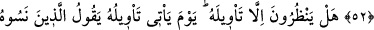
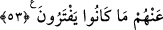
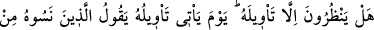
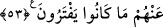

KUR’ÂN’I İNKAR EDENLERİN
ÂKIBETİ
52. Gerçekten onlara, inanan bir toplum için yol gösterici ve rahmet olarak, ilim
üzere açıkladığımız bir kitap getirdik.
53. (Fakat onlar), Onun te’vilinden başka bir şey beklemiyorlar. Te’vili geldiği
(haber verdiği şeyler ortaya çıktığı) gün, önceden onu unutmuş olanlar derler ki:
Doğrusu Rabbimizin elçileri gerçeği getirmişler. Şimdi bizim şefaatçılarımız var mı
ki bize şefaat etsinler veya (dünyaya) geri döndürülmemiz mümkün mü ki, yapmış
olduğumuz amellerden başkasını yapalım? Onlar cidden kendilerine yazık ettiler ve
uydurdukları şeyler (putlar) da kendilerinden kaybolup gitti.
“Gerçekten onlara,” yani bütün kâfirlere veya onlardan o asırda yaşayanlara
“bilgiye göre” bütün yönlerini bilerek açıklayıp hikmetli bir şekilde gelen ya da pek
çok hikmet ihtiva eder olduğu halde akaid, ahkâm ve mev‘iza hususunda
“açıkladığımız,” mânâlarını beyan ettiğimiz, “inanan” onun Allah katından olduğunu
tasdik eden “bir toplum için yol gösterici ve rahmet olan bir Kitab” yani Allah
tarafından indirilen bütün kitapları veya Kur’an-ı Kerim’i “getirdik.” Çünkü o Kitab’ın
tesirinden faydalanan ve nurlarıyla aydınlanan, inanan toplumdur.